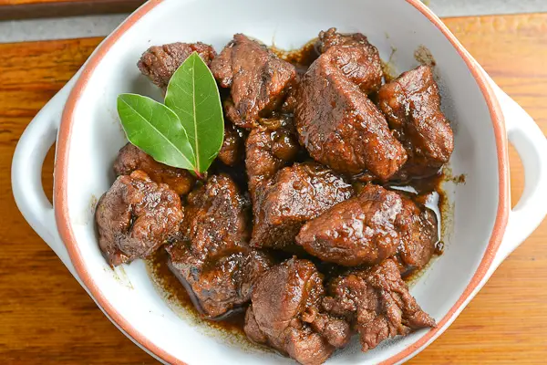

Adobo Recipe

Description:
Adobo is a Philippine dish of fish or meat usually marinated in a sauce containing vinegar and garlic, browned in fat, and simmered in the marinade.
Ingredients:
Chopped Pork Belly
Crushed Black Pepper
Crushed Garlic
Soy Sauce
Water
Onions
Potatoes
Steps:
- Place pork belly, half cup soy sauce, one cup water in a pot
- Boil for 5 minutes
- Add crushed garlic and black pepper
- Let it simmer until the pork belly is cooked
- Add onions and potatoes
- Let the heat cook everything for 15 minutes
Home Page